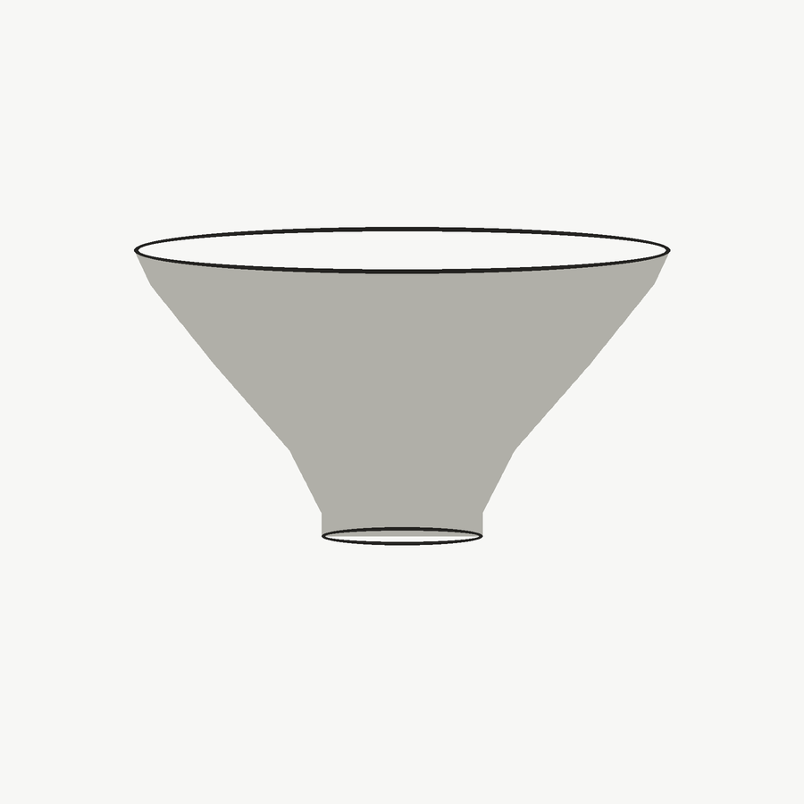
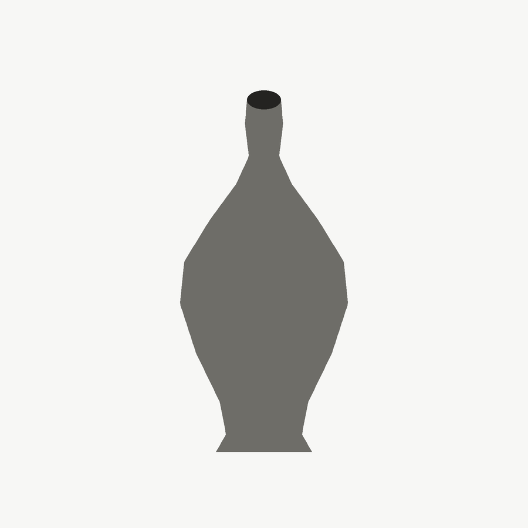
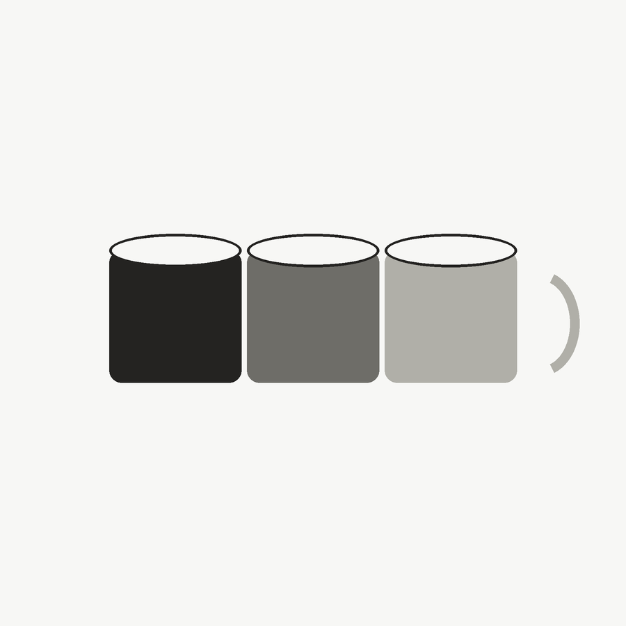

Cuenco Barro Blanco
$14.000
Cuenco de arcilla blanca con esmalte satinado, apto para uso diario en la mesa.
Ver ficha del artículoArtículos / Cerámicos
Piezas torneadas a mano, cada una con pequeñas variaciones propias del trabajo artesanal.

$14.000
Cuenco de arcilla blanca con esmalte satinado, apto para uso diario en la mesa.
Ver ficha del artículo
$22.000
Jarrón de cuerpo panzudo en arcilla roja, con terminación mate al natural.
Ver ficha del artículo
$26.000
Juego de cuatro tazas en gres, con distintas tonalidades dentro de la misma paleta.
Ver ficha del artículo